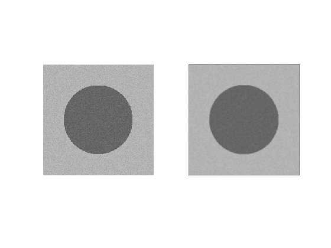
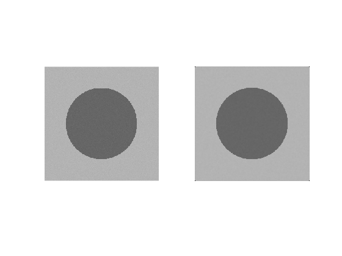
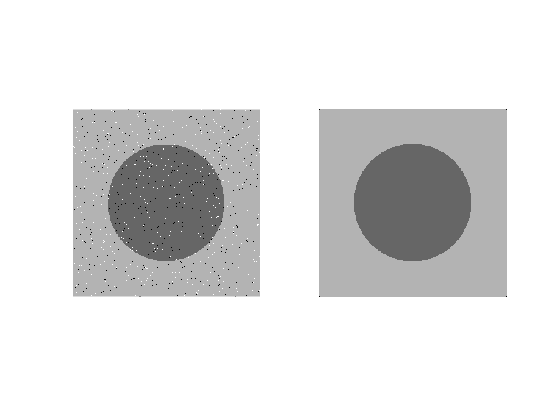

Assignment 4
Requirements:
1. Generate a 256x256 grayscale image with only two different intensity levels (0.4 and 0.7 within the range [0-1]). The intensity of the center part (the distance between the pixel and the center point < 80 pixels) of the image is set to 0.4 and the intesity of the left part of the image is set to be 0.7.
2. Generate three types of noises 1. Gaussian noise with mean 0 and variance 0.01 2. Uniform noise with range [-0.05 to 0.05] 3. Salt and pepper noise with d = 0.02 (2% of pixels get affected by S&P noise)
3. Add the three types of noises to the grayscale image. Include the noisy images and the histogram of the noisy images.
4. Select proper type of filter and use them to restore the noisy images. Include the restoration results and discussions of filtering approach.
Contents
Clear all variables from Workspace
clear all;
clc;
Generate image with a circle
R = 80; circle = double(zeros(256)); for i=1:256 for j=1:256 if sqrt((i-128)^2+(j-128)^2) < R circle(i,j) = .4; else circle(i,j) = .7; end end end %imshow(circle);
Generate Uniform Noise
%[r, c] = size(256); uniformNoise = circle + [rand(256)*.1-.05]; %imshow(uniformNoise); % Uniform filter uniformFilter = fspecial('average', 3); uniformsmoothed=filter2(uniformFilter, uniformNoise); %Image preview 1 %figure,imshowpair(uniformNoise, uniformFilter,'montage'); subplot(1,2,1),imshow(uniformNoise); subplot(1,2,2),imshow(uniformsmoothed); colormap(gray(256)); axis image; axis off; %title('Uniform noise and filter');
Generate Gaussian noise with mean 0 and variance 0.01
This function generates an array of size MxN whose elements are normal (Gaussian) numbers with zero mean and unit variance.
gNoise = circle + [randn(256)*.01]; % Gaussian filter with smoothed edgeds gFilterSmooth = medfilt2(gNoise); % Image preview 2 %figure,imshowpair(gNoise, gFilter,'montage'); subplot(1,2,1),imshow(gNoise); subplot(1,2,2),imshow(gFilterSmooth); colormap(gray(256)); axis image; axis off; %title('Guassian Noise Filter');
Generate Salt and Pepper Noise
SP = circle;
[rows, cols] = size(SP);
noise_percent = 120;
for i = 1:rows
for j = 1:cols
noise_check = randi(100);
if(noise_check == 2)
SP(i,j) = 1;
end
if(noise_check == 1)
SP(i,j) = 0;
end
end
end
% Salt and Pepper filter
SPfilter = medfilt2(circle);
SPfilterArray = repmat(SPfilter, [1 2]);
%montage(SPfilterArray, 'size', [1 NaN]);
%Image preview 3
%figure, imshowpair(SP,SPfilter, 'montage');
subplot(1,2,1),imshow(SP);
subplot(1,2,2),imshow(SPfilter);
colormap(gray(256));
axis image;
axis off;
 Cornermtric function C=cornermetric(f, method, param1, val1, param2, val2)
The Harris-Stephens and minimum-eigenvalue detectors are implemented in the Image Processing Toolbox where: * f is the input image * Method can be either 'Harris' or 'MinimumEigenvalue'. * param1 is 'FilterCoefficients'. * val1 is a vector containing the coefficients of a 1-D spatial filter mask, from which the function generates the corresponding 2-D square filter w discussed earlier. If param1, val1 are not included in the call, the function generates a default 5x5 Gaussian filter using fspecial('gaussian', [1 5],1.5) to generate the coefficients of the 1-D filter. * param 2 is 'SensitivityFactor', applicable only to the Harris detector. *val2 is the value of the sensitivity factor k explained earlier. Its values are in the range 0 < k < 0.25. The default value is 0.04.
NOTES
Generate Noise The degradation function operates on an input image f(x,y) to produce a degraded image g(x,y) =>
g(x,y)=degridationFunction[f(x,y)] + additiveNoise(x,y)
The objective of restoration is to obtain an estimate, f(x,y), of the original image. We want the estimate to be as close as possible to the original imput image. In general, the more we know about H and additiveNoise(x,y), the closer f(x,y) will be to f(x,y). If H is a linear, sparially invariant process, it can shown thta the degraded image is given in the spatial domain by =>
restorationFilter(x,y) = pointSpredFunction(x,y)*
(convolution)f(x,y) + additivenoise(x,y)where h(x,y) is the spatial representation of the degradation function the convolution. Convolution in the spatial domain and multiplication in the frequency domain constitute a Fourier transform pair, so we can write the preceding model in an equivalent frequency domain representation:
G(u,v) = H(u,v)opticalTransferFunction(u,v) + N(u,v)
where the terms in capital letters are the Fourier transforms of
the corresponding terms in the spatial domain. F(u,v) is the
degridation function that is somethimes called the optical transfer
function (OTF)Fourier transform pair functions for converting between them or "convolving the image with PSF(point spread function):
otf2psf() and psf2otf() - Similarly, the restoration process is refered to as deconvolution. - H is the identity operator and we deal only with degradation due to noise.
Noise Models: g = imnoise(f,type, parameters)
where imnoise() converts the imput image to class double in the range [0 1] before adding noise to it. This must be taken into account when specifying noise parameters.f is the input image, and type and parameters
% [r,c] = size(im); % D = zeros(r,c); % uniformNoise = rand(D); % uniformNoise = find(im); % %[r, c] = find(A); % %[r,c,v] = find(A); % I = find(im < 128); % %A(I) = 0; % %The operation on line 101 caould also be done using logical indexing ex105 % %A < 128 returns a 1 for the elements of A that satisfy the logical % %condition and 0 for those that do not. % im(im < 128) = 0; % EXAMPLE: set to 128 all pixels in the interval [64, 192] % I = find(A >= 64 & A <= 192); % A(I) = 128; %Equivalently, could be written % A(A >+ 64 & A<+ 192) = 128